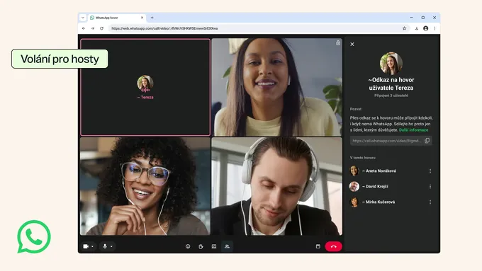

WhatsApp objevil Zoom. Jeho největší výhoda je, že ho už skoro všichni mají
WhatsApp už nechce být jen messenger. Nově pustí do hovoru i člověka bez účtu, přes obyčejný odkaz v prohlížeči. Meta tak nenápadně leze na území Zoomu, Meetu a Teams — jen s jednou drobnou výhodou: WhatsApp už skoro všichni mají.

WhatsApp byl dlouho taková ta aplikace, kterou otevřete, když chcete někomu napsat, zavolat nebo poslat fotku toho, co jste právě snědli. Meta z něj ale postupně dělá něco podstatně širšího. Nejnovější změna je přitom zajímavá hlavně tím, jak nenápadně posouvá WhatsApp na území Zoomu, Google Meetu a Teams: do hovoru se nově může připojit i člověk, který WhatsApp vůbec nemá. A přesně v tu chvíli přestává být „volání přes messenger“ jen funkcí messengeru.
Funguje to jednoduše. Uživatel WhatsAppu vytvoří odkaz na hovor a pošle ho komukoli. Pozvaný člověk ho otevře v počítačovém prohlížeči, napíše svoje jméno a čeká, až ho hostitel pustí dovnitř. Žádná instalace aplikace, žádná registrace, žádné telefonní číslo. Hovor může být jeden na jednoho i skupinový až pro 32 lidí, nemá časový limit a Meta uvádí, že zůstává end-to-end šifrovaný. Hosté navíc nevidí telefonní čísla ostatních účastníků, nemohou během hovoru rozesílat zprávy ani přidávat další lidi. Hostitel je naopak může kdykoli vyhodit, což je vlastně přesně ten druh administrátorské pravomoci, který chcete mít ve chvíli, kdy někam pustíte člověka jen přes odkaz.
Aby Meta náhodou nenechala nikoho na pochybách, kam tím míří, dostanou hosté i sdílení obrazovky, reakce emoji a možnost „zvednout ruku“. Tedy funkce, které jsme si během covidových let kolektivně spojili s on-line poradou natolik, že při pohledu na ikonku zdvižené ruky někteří lidé ještě dnes cítí lehké pracovní PTSD. WhatsApp tak technicky nepřináší nic převratného. Čekárna, sdílení obrazovky ani meetingový link nejsou objev století. Jen je dává do aplikace, kterou už má půlka planety v telefonu a jejíž používání nemusíte vysvětlovat větou začínající „nejdřív si stáhni…“.
Tohle je podle mě ta důležitější část celé novinky. Zoom uspěl mimo jiné proto, že poslat někomu odkaz na videohovor bylo jednodušší než řešit, v jakém ekosystému žije. WhatsApp byl naopak vždycky velmi silný tam, kde už byli všichni uvnitř. Teď tuto hranici odstraňuje. Člověk nemusí být uživatelem WhatsAppu, aby se účastnil WhatsApp hovoru. Potřebuje jen prohlížeč a někoho na druhé straně, kdo účet má. A tím se z messengeru začíná stávat komunikační infrastruktura, ne jen další ikonka mezi Signálem a Messengerem.
Ještě výraznější to bude ve chvíli, kdy se WhatsApp propojí s Google Kalendářem a Outlookem. Myšlenka je jednoduchá: vytvoříte WhatsApp call přímo z kalendáře a odkaz vložíte do pozvánky. V praxi tedy úplně stejný workflow jako dnes u Meetu nebo Teams: porada v 10:30, kliknete na odkaz, dovnitř. Jen místo Google Meet nebo Microsoft Teams tam bude WhatsApp.
A tady začíná být celá věc pro konkurenci zajímavá. Ne proto, že by WhatsApp měl lepší videokonference než Zoom nebo rozsáhlejší firemní nástroje než Teams. Nemá. Jenže jeho největší funkcí není sdílení obrazovky. Jeho největší funkcí je, že ho lidé už používají. Nemusíte zakládat nový účet, přemýšlet, jestli se přihlásit přes Microsoft nebo Google, ani poslouchat kolegu, který už třetí minutu vysvětluje, že mu Teams zase nevidí mikrofon.
WhatsApp tím zatím Zoom nezabil a Teams může dál v klidu komplikovat pracovní život milionům lidí. Ale hranice mezi „messengerem“ a „videokonferenční platformou“ právě zase trochu zmizela. A pokud jednou přijde okamžik, kdy vám někdo pošle pracovní pozvánku do kalendáře s tlačítkem Připojit přes WhatsApp, nejspíš vám to ani nebude připadat divné.
Což je možná nejlepší známka toho, že Meta tenhle posun udělala správně.